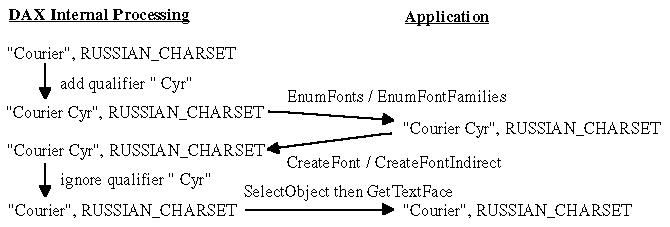

The facename qualifier (" Greek", " CE", " Cyr" or "OEM", if added) should be ignored so that it will not be stored in Open32 internal Font Objects as a part of facename. Any Open32 functions other than EnumFonts and EnumFontFamilies do not return facename qualifiers.
Note: Even if a qualifier is specified in the facename, the qualifier itself does not represent the set of characters on creating a logical font. The CharSet information is taken only from CharSet in the logical font. The qualifier is supplied just for applications and users only to distinguish one from the others which have the same facename.